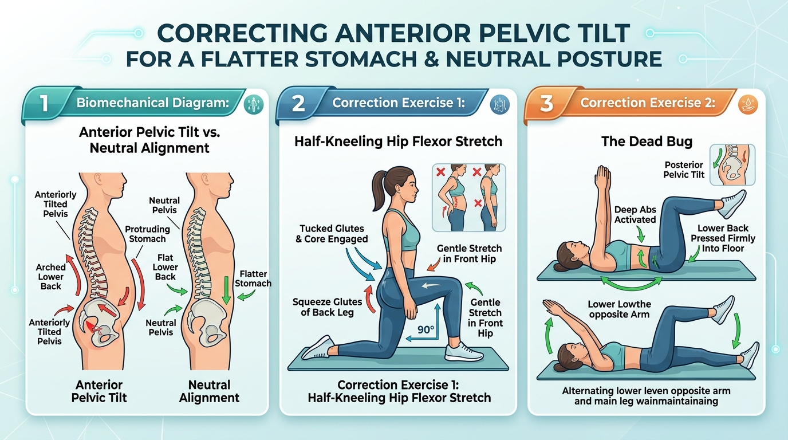
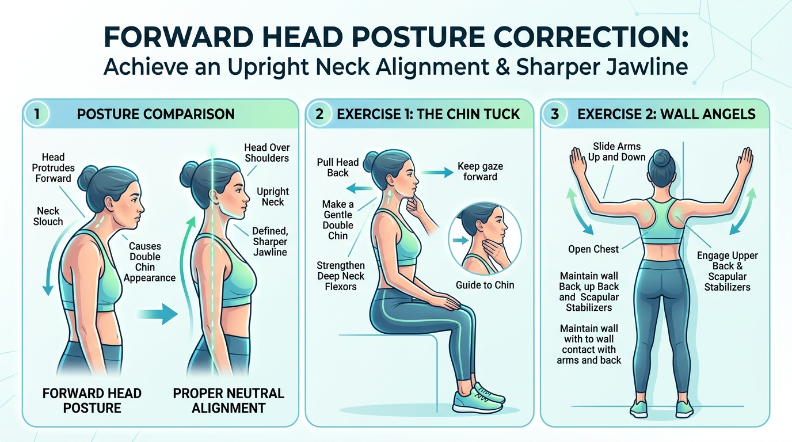

Schematic Inspection
Biomechanical Diagnostic View
End-of-life incontinence and cognitive collapse are not normal aging. They represent catastrophic, preventable failures in transfer mechanics and cerebral perfusion. This system combines fMRI-validated neuro-acoustic algorithms with heavy compound muscular shock absorbers to guarantee 100% independent living until terminal organ shutdown.
Drag the slider to compare standard uncalibrated decline vs the Cerebral Veda protocol.
Hard empirical proof to show any rationalist who assumes chanting is mere superstition.
Dr. James Hartzell (Trento Center for Mind/Brain Sciences) conducted high-resolution structural MRI scans on traditional Vedic pandits. The scans revealed statistically significant bilateral increases in grey matter thickness across the hippocampus and temporal cortex — the exact memory centers decimated first in Alzheimer's disease.
Karolinska Institute researchers (Weitzberg & Lundberg) measured sinusoidal gas levels during humming and resonant vocalizations (*Anusvāra*). The acoustic resonance causes an immediate 15-fold (1,500%) surge in nitric oxide (NO) gas release, vasodilating cerebral micro-vessels and flushing oxygenated blood directly into brain tissue.
Vedic sages solved data corruption in noisy channels 3,400 years before Claude Shannon. The Ghana Pāṭha system enforces matrix permutations (`1-2-2-1-1-2-3-3-2-1-1-2-3`), forcing biological neural networks to execute Forward Error Correction (FEC) and cryptographic parity checking to preserve 10,552 verses without bit-rot.
Click any schematic to open high-resolution inspection modal.

● Couch Stretch: Squeeze rear glute hard to de-clamp shortened hip flexors.
● Dead Bug: Lower back crushed flat into floor to build deep abdominal wall.

● Chin Tucks: Strengthen deep cervical flexors to restore jawline definition.
● Wall Angels: Repositions scapular stabilizers and un-rounds shoulders.
Breathe in through nose (5s). On exhale (5s), hum or recite "Om" with resonant lips. Cranial vibration activates paranasal nitric oxide release, dilating cerebral micro-vessels.
Step-by-step guided cadence. Automatically tracks and transitions through the 4 essential movements to unclamp hip flexors and flatten the stomach.
Regulating the enteric-nervous system, Bristol Type-4 consistency, and brain barrier defense.